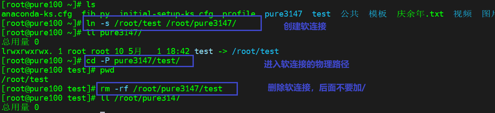
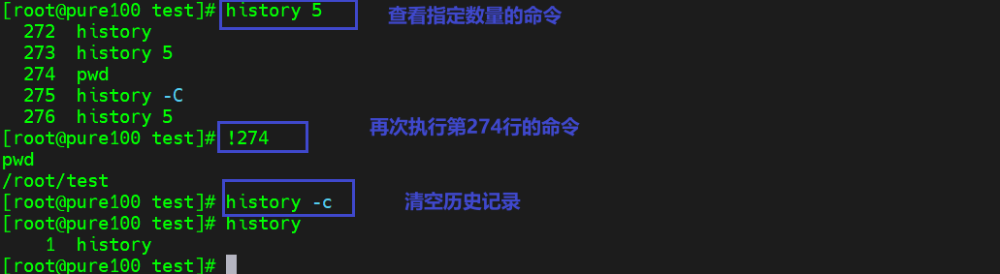

Linux实操-常用命令-软连接级查看历史命令

文章目录
软链接也称为符号链接，类似于windows 里的快捷方式，有自己的数据块，主要存放了链接其他文件的路径。
软连接
-
基础语法
1ln -s 源文件或目录 链接名 # 功能描述：给源文件创建一个软连接 -
经验技巧
- 删除软连接：
rm -rf 链接名而不是rm -rf 链接名/ - 如果使用
rm -rf 链接名/删除，会把软连接对应的真实目录下内容删掉 - 查询：通过
ll就可查看，列表属性第一位是l，表示该文件是软连接，尾部会有该软连接的位置指向
- 删除软连接：
-
实操案例

history：查看已经执行过历史命令
-
基本语法
1 2 3 4history # 功能描述：查看已经执行过历史命令 history 数字 # 查看最后数字行的历史命令 !行号 # 再次执行该命令 history -c # 清空历史记录 -
实操案例

文章作者 Pure3417
上次更新 2023-04-30